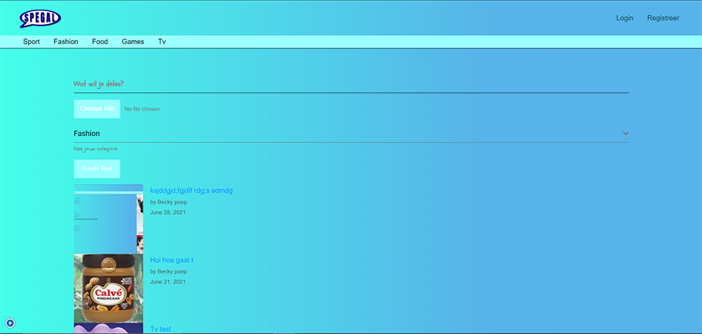

Spegal
Gemaakt door Becky en Danny
Doelgroep
Onze doelgroep is 16 tot en met 30 jarige mensen, omdat die het meeste bezig zijn met dit soort platformen.
Onze skills
Wij hebben wordpress gebruikt en dat doet eigenlijk alles al voor je. Wel hebben we nog wat eigen css toegevoegd om het er beter eruit te laten zien.
Feedback
We hebben de feedback meegenomen in ons project. Daarom hebben we onze eigen css erin gedaan en
hebben we gekeken naar de verbeterpunten van de site qua style en posts. Voor de rest was er niet veel feedback.